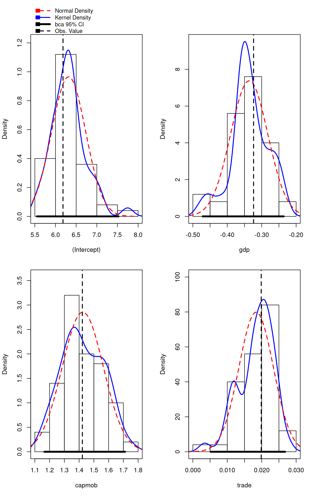

Built using Zelig version 5.1.4
Bootstrapping is often used to obtain a robust estimate of the uncertainty of a parameter due to sampling error.
Attach sample data:
library(car)
library(boot)##
## Attaching package: 'boot'## The following object is masked from 'package:car':
##
## logitdata(macro, package = "Zelig")Estimate the model, setting the number of bootstrapped datasets to construct:
out <- lm(unem ~ gdp + capmob + trade,
data = macro)
out.boot <- Boot(out, R = 50)Summary by default shows the original and bootstrapped point parameter estimates, with the standard errors generated by the bootstrap.
summary(out.boot)## R original bootBias bootSE bootMed
## (Intercept) 50 6.181294 0.1365541 0.413390 6.306729
## gdp 50 -0.323601 -0.0127112 0.054106 -0.342607
## capmob 50 1.421939 0.0029267 0.139833 1.402953
## trade 50 0.019854 -0.0014672 0.004996 0.019192We can also calculate confidence intervals and examine the bootstrapped distribution.
confint(out.boot)## Warning in confint.boot(out.boot): BCa method fails for this problem. Using
## 'perc' instead## Bootstrap quantiles, type = percent
##
## 2.5 % 97.5 %
## (Intercept) 5.548899595 7.52513502
## gdp -0.471561458 -0.23611442
## capmob 1.164458097 1.71142800
## trade 0.005176712 0.02678396hist(out.boot)## Warning in confint.boot(x, type = ci, level = level): BCa method fails for
## this problem. Using 'perc' instead